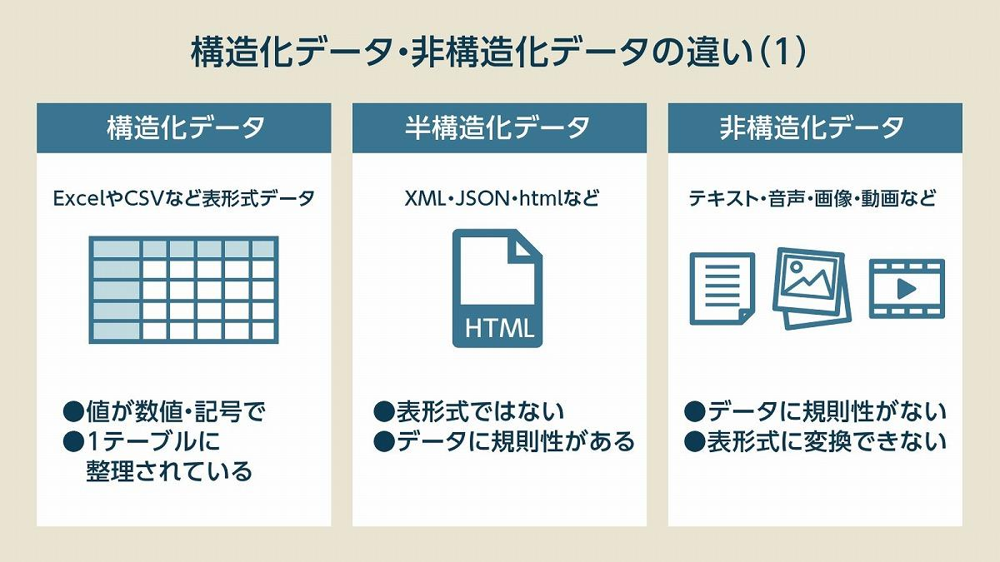

オープンデータとは、主に国やつ法公共団体などが公開している、誰もが路用可能なデータである。
「オープンデータ基本指針」において、「1.営利目的、非営利目的を問わず二次利用可能なルールが適用されたもの」「2.機械判読に適したもの」「3.無償で利用できるもの」と定義されている。
オープンデータには様々な統計データが存在している。オープンデータは二次利用が可能であるため、加工・編集・再配布などを行い、必要なデータを自由に活用できるメリットがある。
オープンデータは各機関が用意したサイトから無料でダウンロードして使用することができる。機械判読が可能なExselやCSVなどで影響されているため加工しやすいという特徴もある。
・データレイクとは何か
データレイクとは、様々なソースから得た、構造化/非構造化データやバイナリなどのファイルを含めた多様なデータを一元的に格納できるシステム。格納されたデータは、多岐にわたる方法で分析される。
データレイクはデータの形式に関わらず原形のまま格納できる。この特徴を生かして構造化データだけでなく、非構造データも格納できる。

・Tableauとはどのようなツールか(用途、特徴など)
専門家でなくともデータの加工・レポート作成・分析をおコネうことができるBIツールというものが存在し、TableauはBIツールの中でもきれいさや操作性に特化したツールである。
・Tableauを用いて、どのような可視化・分析が可能だと考えられるか。
・データや資料の共有
・様々なデータをリアルタイムで共有により、データを用いた分析の高速化・効率化
このことからデータを可視化することで、分析を高速化できる。
参考文献
https://www.dx-digital-business-sherpa.jp/blog/what-is-open-data
https://www.sbbit.jp/article/cont1/32365
https://quickdmp.ayudante.jp/basic/tableau/
https://www.tableau.com/ja-jp/learn/articles/visualizing-data#step8